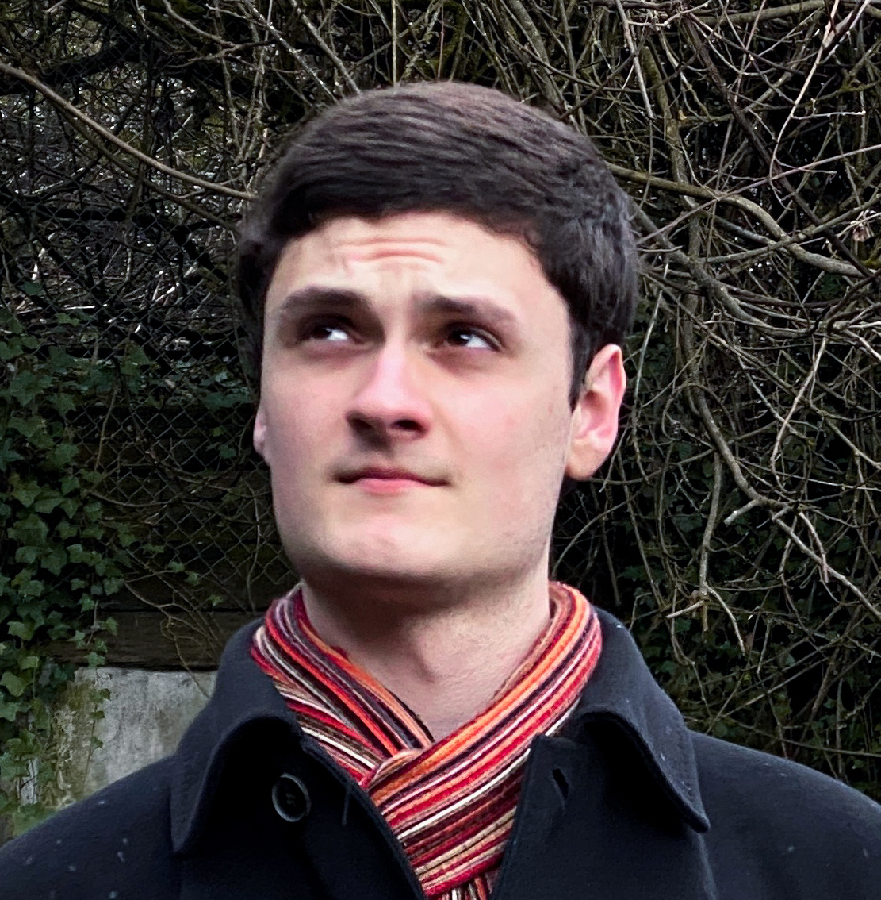
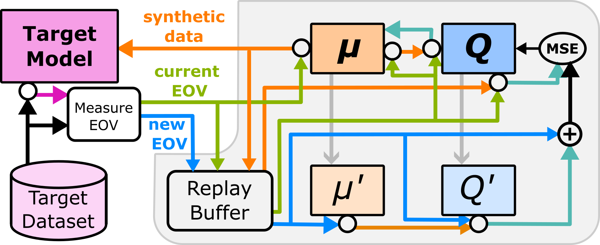

Thomas Pinkava
Hello! I'm Thomas Pinkava, a recent graduate from the University of Washington with a Master's Degree in Computer Science.
I earned a Bachelor's from Grinnell College -- also in CS -- and have a variety of computing skills, from developing games in Godot
and C++ to working on Reinforcement-Learning ML Agents.
My research interests are in the architectural requirements for Machine Learning model manipulators: what are the techniques and processes required to modify these opaque systems, and how can we devise such processes automatically? What does it take to modify metaproperties of a model, such as fairness, without regard to the specific data domains involved?
My other computing interests include amateur astrodynamics, cellular automata, and procedural content generation.

Publications

A Model- and Data-Agnostic Debiasing System for Achieving Equalized Odds
Pinkava, T.; McFarland, J.; Mashhadi, A.
Proceedings of the 2024 AAAI/ACM Conference on AI, Ethics, and Society (AIES '24)
paper
code